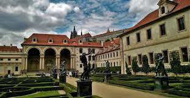
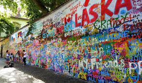
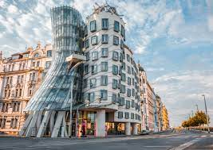

10 цікавих місць Праги, які можна відвідати безкоштовно
Валдштейнський палац
Хочете дізнатися, як виглядає «правильний» сад, гідний королів? Відправляйтеся на прогулянку до прекрасного Валленштейнского палацу. Потрібно сказати, що він ніколи не належав монаршим особам, але саме до цього рівня прагнув знаменитий полководець Альбрехт Валленштейн, який ініціював будівництво резиденції.
На зведення цього значного садово-паркового комплексу у команди будівельників і архітекторів пішло більше п’яти років. Плоди їх роботи до сих пір радують око – навколишній найбільший палац Праги ідеально підходить для неспішних променадів, а також нерідко стають майданчиком для численних (також безкоштовних) концертів і фестивалів.
Галерея Лапідаріум
- Легендарний Лапідаріум – без сумніву, одна з найпомітніших експозицій в багатій музеями Празі. Адже не дарма кілька років тому галерея увійшла в число найкрасивіших європейських виставок. Її створення передувало бажання празької влади зберегти кам’яні статуї і елементи історичних будівель столичних вулиць.
- Саме тому вони все збиралися в сховище, а їх місце займали влучні репліки. Сьогодні це сховище перетворилося в багатющий і красивий музей кам’яних скульптур, побачити які можна абсолютно безкоштовно.
Стіна Джона Леннона
Бунтівник і борець за мир, музикант і поет, учасник найзнаменитішої групи світу і людина-ікона Джон Леннон назавжди залишився жити не тільки в серцях своїх відданих шанувальників, а й на багатьох тематичних вулицях в різних куточках світу. Серед жителів Праги також знайшлося чимало тих, які вірять, що любов – це все, що нам потрібно.
Хоч за життя Леннон так ніколи і не побував в чеській столиці, одна з найбільш атмосферних пам’яток, пов’язаних з його ім’ям, розташована саме тут. Біля стіни можна не тільки розглянути багатошарові графіті вуличних художників, а й нерідко послухати талановиті кавери на хіти – Бітлзу від місцевих музикантів.
«Танцюючий будинок»
Подивитись на один з найбільш незвичайних архітектурних проектів сучасності теж дорогого коштує, погодьтеся. Вірніше, це не варто нічого, якщо ви в Празі. Радимо обов’язково побувати біля знаменитого «Танцюючий дому».
Звичайно, у будівлі немає тієї ж історії і атмосферности, що у будівель в Старому місті, але воно однозначно впишеться в найцікавіший план прогулянки по міських визначних пам’яток.
